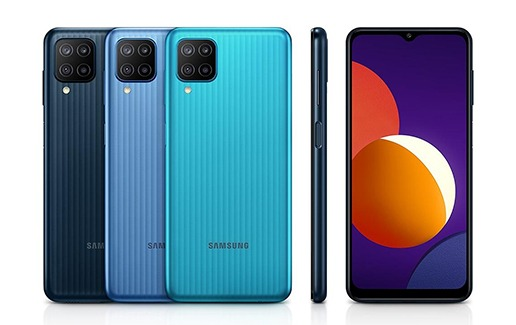
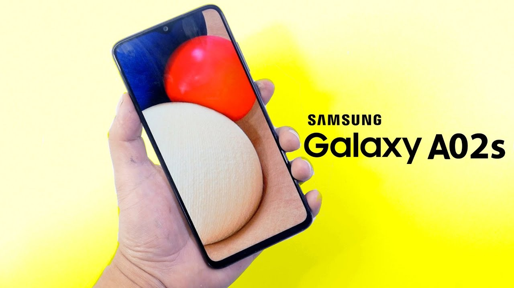

Teléfonos de Gama Alta
Explora lo mejor que Samsung tiene para ofrecer con sus teléfonos de gama alta, que cuentan con procesadores de primer nivel y tecnología de vanguardia.
- Samsung Galaxy S21 Ultra
- Samsung Galaxy Z Fold3
- Samsung Galaxy Note 20 Ultra
Samsung Galaxy S21 Ultra
Samsung Galaxy Z Fold3
Samsung Galaxy Note 20 Ultra
Teléfonos de Gama Media
Obtén el equilibrio perfecto entre rendimiento y precio con los dispositivos de gama media de Samsung.
- Samsung Galaxy A52
- Samsung Galaxy A72
- Samsung Galaxy M32

Samsung Galaxy A52
Samsung Galaxy A72
Samsung Galaxy M32
Teléfonos de Gama Baja
Asequibles y confiables, los teléfonos de gama baja de Samsung son perfectos para el uso diario.
- Samsung Galaxy A12
- Samsung Galaxy M12
- Samsung Galaxy A02s
Samsung Galaxy A12
Samsung Galaxy M12
Samsung Galaxy A02s
Procesadores por Gama
Cada gama de teléfonos Samsung está impulsada por procesadores diseñados para satisfacer necesidades específicas:
- Gama Alta: Exynos 2100, Snapdragon 888
- Gama Media: Exynos 9611, Snapdragon 720G
- Gama Baja: Exynos 850, MediaTek Helio P35